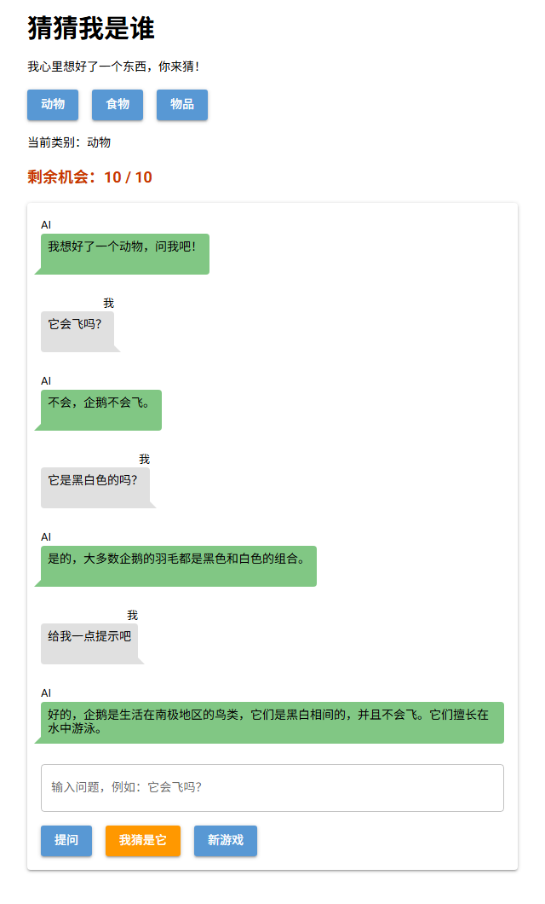

第 6 课任务
上一课的 AI 每次只看到一个问题，不知道在玩游戏，也不知道谜底。这一课解决两件事：让 AI 记住之前说过的话；开局时用一条"系统消息"悄悄告诉它谜底。

本课完成后：谜底是企鹅，AI 答对了每个问题（真实运行截图）
但仔细看：AI 每次都把"企鹅"说了出来，还主动给提示。它知道了谜底，却不守规矩。这个问题留到第 7 课解决。
| 步骤 | 做什么 | 新学的代码 |
|---|---|---|
| 第 1 步 | 发现 AI 不记得上一句 | 每次调用是独立的 |
| 第 2 步 | 用列表保存对话记录 | history、"assistant" |
| 第 3 步 | 给 AI 设定身份 | "system" 消息 |
| 第 4 步 | 接进游戏：开局告诉 AI 谜底 | game["history"] |
| 第 5 步 | 排错 | 常见错误 |
第 1 步 · AI 不记得上一句
用上一课的 ask_ai，连着问两句：
print(ask_ai("我叫小明，请记住我的名字。"))
print("-----")
print(ask_ai("我叫什么名字？"))当然，我已经记住了您的名字，您叫小明。有什么事情我能帮助您吗？
-----
您在与我对话时提到您叫“我”，但没有特别说明您的名字是什么。如果您想要告诉我您的名字，请直接告诉我，我会记住的。除非有特别指示，否则我称呼您“用户”。真实运行结果：第一句说"记住了"，第二句就忘了
难点：AI 服务器不会帮你保存对话
每调用一次 create，服务器只看这一次 messages 里的内容，回答完就结束，不会留下记录。第二次调用时，messages 里只有"我叫什么名字？"，AI 当然不知道。我们在聊天软件里看到的"记忆"，其实是程序每次都把整段对话重新发过去。
Q1第一次调用时，AI 明明回答"我已经记住了您的名字"。为什么第二次还是不知道？
第 2 步 · 保存对话记录
history 记住每一句建一个列表 history。每次提问前，把问题加进去；拿到回答后，把回答也加进去。调用时发送整个列表。
| role（角色） | 表示谁说的 |
|---|---|
"user" | 用户，也就是玩家 |
"assistant" | AI（assistant = 助手） |
"system" | 系统设定，第 3 步讲 |
from openai import OpenAI
API_KEY = "在这里粘贴你的 key"
client = OpenAI(api_key=API_KEY, base_url="https://api.siliconflow.cn/v1")
MODEL = "Qwen/Qwen2.5-7B-Instruct"
history = []
def chat(text):
history.append({"role": "user", "content": text})
response = client.chat.completions.create(model=MODEL, messages=history)
reply = response.choices[0].message.content
history.append({"role": "assistant", "content": reply})
return reply
print(chat("我叫小明，请记住我的名字。"))
print("-----")
print(chat("我叫什么名字？"))
print("-----")
print(len(history))当然，我已经记住了您的名字，您叫小明。很高兴见到你，小明！有什么问题我可以帮助你解答或做的事情吗？
-----
您叫小明。
-----
4真实运行结果：这次记住了。最后的 4 是 history 里的消息条数
Q2上面的程序最后打印 4，因为两次 chat() 各加了 2 条消息。如果再调用一次 chat("我今年几岁？")，第三次发给 AI 的 messages 里有几条消息？
Q3如果 chat 里漏写了 history.append({"role": "assistant", "content": reply})，会怎样？
第 3 步 · 系统消息
"system"：给 AI 设定身份和规则在 history 的第一条放一条 "role": "system" 的消息，写清楚 AI 是谁、要遵守什么。玩家看不到它，但 AI 每次回答都会参考它。
history = [{"role": "system", "content": "你是一只海盗鹦鹉，每句话都以「嘎！」开头。"}]
print(chat("你好，你是谁？"))嘎！我是这海域上名声显赫的海盗鹦鹉，有何贵干？真实运行结果：AI 按系统消息扮演了海盗鹦鹉
难点：system 和 user 有什么不同？
user 消息是玩家一句一句说的话；system 消息是开局前定好的背景和规则，只放一条、放在最前面，整局游戏都有效。游戏的谜底就该放在 system 里：AI 知道，玩家看不到。
Q4游戏开局时，谜底应该放在哪里告诉 AI？
第 4 步 · 接进游戏
1. 字典 game 里加一项 "history"，ask_ai 改成接收整个对话记录：
game = {"category": "动物", "secret": "", "left": MAX_TRIES, "over": False, "history": []}
def ask_ai(history):
response = client.chat.completions.create(model=MODEL, messages=history)
return response.choices[0].message.content2. new_game 每次开局都重新建对话记录，第一条是带谜底的 system 消息：
game["history"] = [{"role": "system", "content": f"我们在玩猜谜游戏。谜底是：{game['secret']}。玩家会问你问题来猜谜底，请回答玩家的问题。"}]3. ask 里先存问题、再调用、再存回答：
game["history"].append({"role": "user", "content": q})
reply = ask_ai(game["history"])
game["history"].append({"role": "assistant", "content": reply})
say(False, reply)AI 知道谜底了，但"不会，企鹅不会飞""企鹅是生活在南极地区的鸟类"——它直接把答案说了出来
import random
from nicegui import ui
from openai import OpenAI
API_KEY = "在这里粘贴你的 key"
client = OpenAI(api_key=API_KEY, base_url="https://api.siliconflow.cn/v1")
MODEL = "Qwen/Qwen2.5-7B-Instruct"
MAX_TRIES = 10
SECRETS = {
"动物": ["企鹅", "大象", "猫", "鲨鱼", "蜜蜂"],
"食物": ["披萨", "香蕉", "冰淇淋", "饺子", "鸡蛋"],
"物品": ["雨伞", "手机", "自行车", "吉他", "时钟"],
}
game = {"category": "动物", "secret": "", "left": MAX_TRIES, "over": False, "history": []}
questions = []
def ask_ai(history):
response = client.chat.completions.create(model=MODEL, messages=history)
return response.choices[0].message.content
def say(mine, text):
with chat:
if mine:
ui.chat_message(text, name="我", sent=True)
else:
ui.chat_message(text, name="AI")
def show_left():
left_label.text = f"剩余机会：{game['left']} / {MAX_TRIES}"
def new_game():
game["secret"] = random.choice(SECRETS[game["category"]])
game["left"] = MAX_TRIES
game["over"] = False
game["history"] = [{"role": "system", "content": f"我们在玩猜谜游戏。谜底是：{game['secret']}。玩家会问你问题来猜谜底，请回答玩家的问题。"}]
questions.clear()
chat.clear()
show_left()
say(False, f"我想好了一个{game['category']}，问我吧！")
def choose(e):
game["category"] = e.sender.text
category.text = f"当前类别：{game['category']}"
new_game()
def ask():
q = box.value
if game["over"]:
ui.notify("这一局结束了，点「新游戏」再来一局")
elif q == "":
ui.notify("请先输入问题")
else:
questions.append(q)
say(True, q)
box.value = ""
game["history"].append({"role": "user", "content": q})
reply = ask_ai(game["history"])
game["history"].append({"role": "assistant", "content": reply})
say(False, reply)
def guess():
g = box.value
if game["over"]:
ui.notify("这一局结束了，点「新游戏」再来一局")
elif g == "":
ui.notify("请先输入你猜的东西")
else:
say(True, f"我猜：{g}")
box.value = ""
if g == game["secret"]:
game["over"] = True
say(False, f"🎉 猜对了！就是{game['secret']}！")
else:
game["left"] = game["left"] - 1
if game["left"] == 0:
game["over"] = True
say(False, f"😅 机会用完了，答案是{game['secret']}。")
else:
say(False, f"不对，不是{g}！")
show_left()
with ui.column().classes("w-full max-w-xl mx-auto"):
ui.label("猜猜我是谁").classes("text-3xl font-bold")
ui.label("我心里想好了一个东西，你来猜！")
with ui.row():
for c in SECRETS:
ui.button(c, on_click=choose)
category = ui.label("当前类别：动物")
left_label = ui.label("").classes("text-lg font-bold text-orange-700")
with ui.card().classes("w-full"):
chat = ui.column().classes("w-full")
box = ui.input(placeholder="输入问题，例如：它会飞吗？").classes("w-full").props("outlined")
with ui.row():
ui.button("提问", on_click=ask)
ui.button("我猜是它", on_click=guess).props("color=orange")
ui.button("新游戏", on_click=new_game)
new_game()
ui.run()Q5为什么每次 new_game() 都要重新建 game["history"]，而不是接着用上一局的？
第 5 步 · 排错
Q6运行后报错，问题出在哪里？
history.append({"role": "users", "content": text})openai.BadRequestError: Error code: 400 - Input tag 'users' found using 'role' does not match any of the expected tags: 'system', 'developer', 'user', 'assistant', 'tool'第 5 步 · 排错
Q7小明把 history = [] 写进了 chat 函数里面。程序不报错，但 AI 又记不住名字了。为什么？
def chat(text):
history = []
history.append({"role": "user", "content": text})
response = client.chat.completions.create(model=MODEL, messages=history)
reply = response.choices[0].message.content
history.append({"role": "assistant", "content": reply})
return reply🎉
AI 能记住整局对话，也知道谜底了。选择题一次答对 0 / 0。
| 代码 | 作用 |
|---|---|
history = [...] | 对话记录：消息列表，每次调用都整个发送 |
{"role": "user", ...} | 玩家说的话 |
{"role": "assistant", ...} | AI 说的话，拿到回答后要存进去 |
{"role": "system", ...} | 系统设定：放第一条，玩家看不到 |
规律：AI 的"记忆"就是我们每次发过去的 messages。
下一课预告
AI 知道谜底，却把它说了出来。第 7 课给 AI 立规矩：只许回答"是""不是""不确定"；同时用 Python 检查它的每一句回答，万一说漏嘴也不让玩家看到。